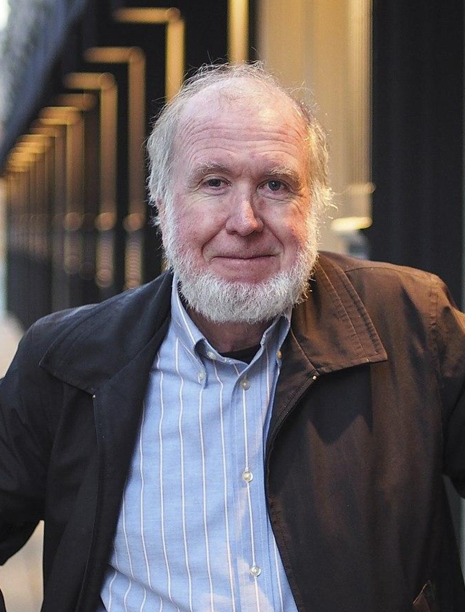
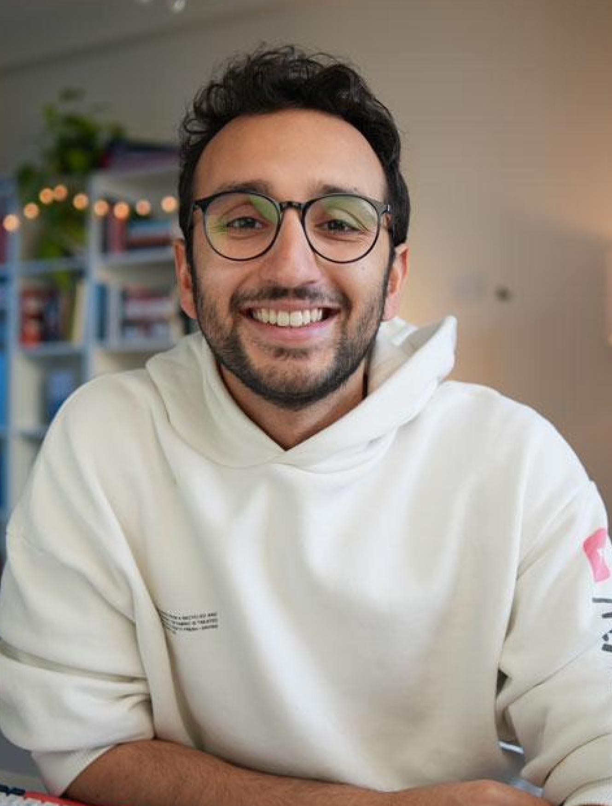
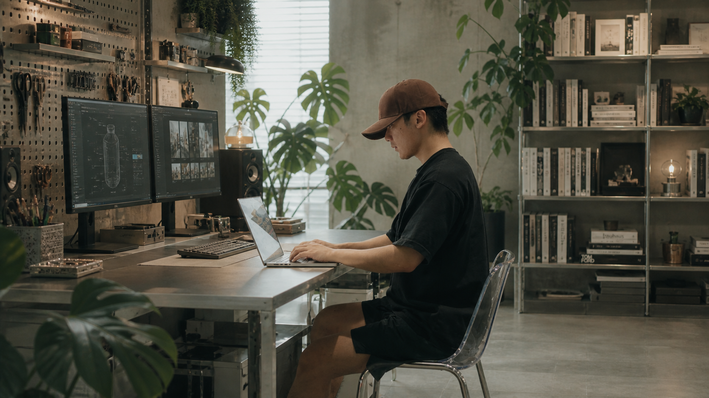
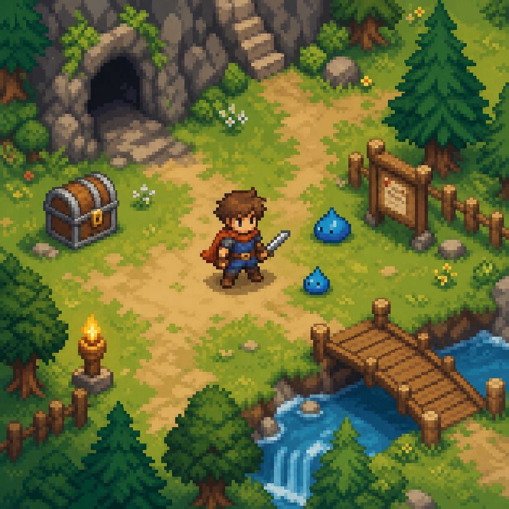
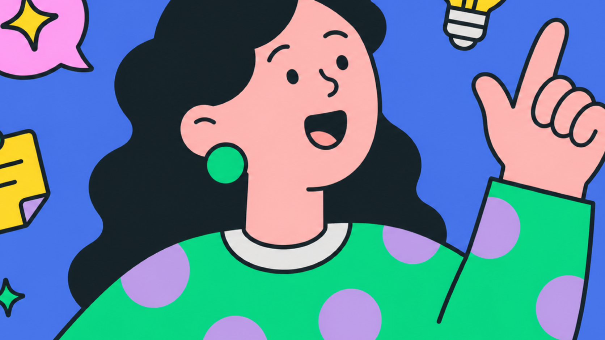
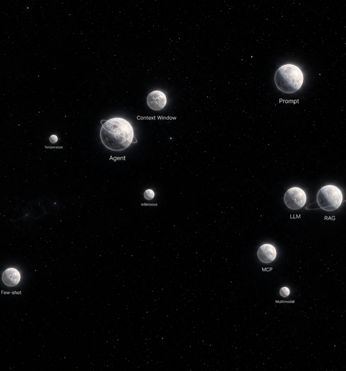
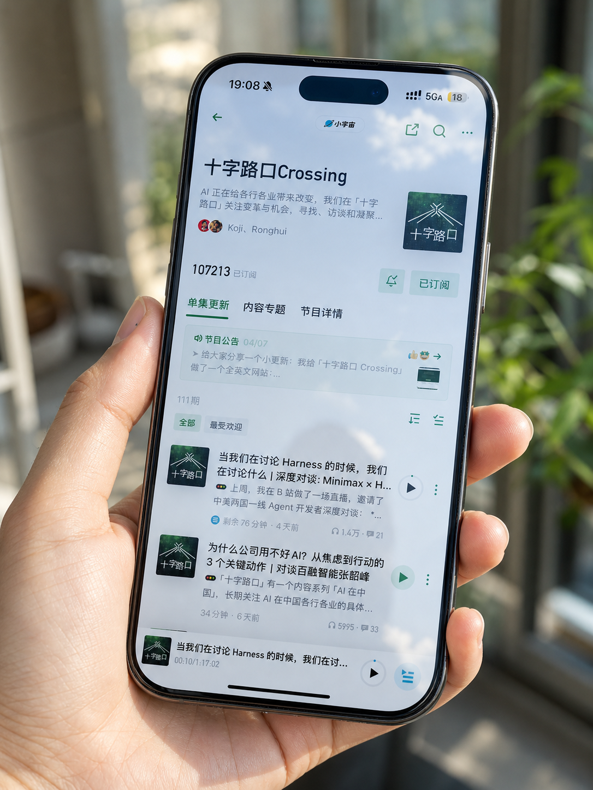
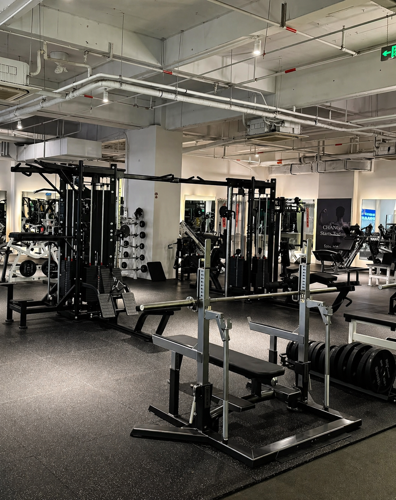
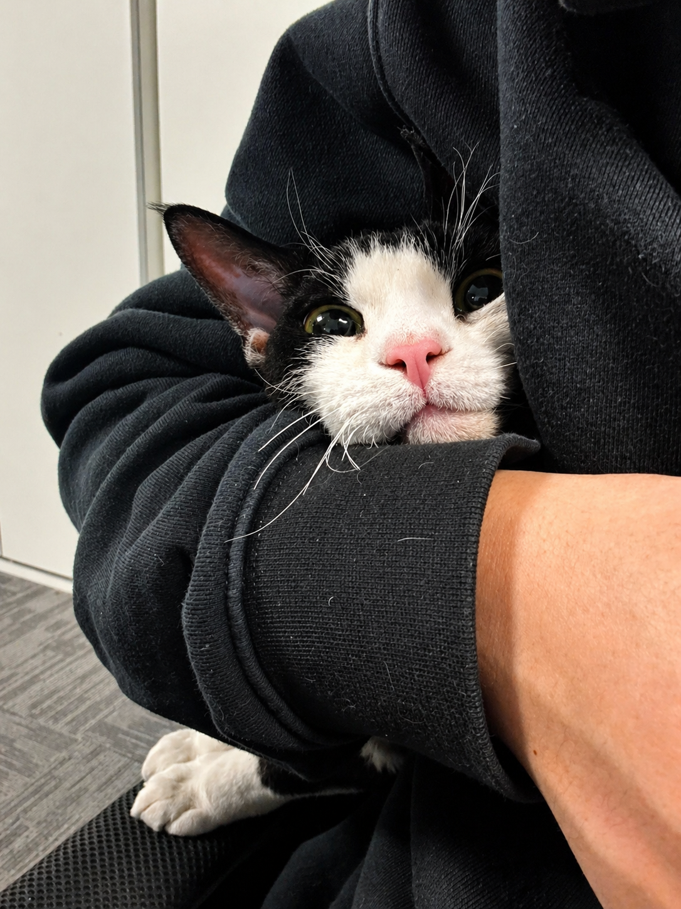

Ethan Mollick
Wharton professor, AI and work researcher
Always invite AI to the table. You should try inviting AI to help you in everything you do. 永远让 AI 上桌。你应该尝试让 AI 参与到你做的每一件事里。
一个从传统互联网人转型过来，正在用 AI 重做工作方式、内容方式和个人生意的普通人。 不追逐每一个 AI 工具，更关心怎么真正把 AI 用出结果。
Based in Zhejiang. An introvert with shifting signal strength, good at daydreaming, and sometimes mildly sharp-tongued. From engineering to UI/UX, from ToC and ToB products to startups and commerce. Now I am starting from zero as an AI content creator, rebuilding my work, my brand, and myself with AI.
坐标浙江，纯度忽高忽低的I人，擅长白日梦，偶尔轻微毒舌。 在杭州上大学的时候，一直怀揣着想做一个真正能改变人们生活方式的产品的梦想。 所以毕业后，并没有走原来的工科专业，而是转去做了 UI/UX 设计。因为那时候觉得，这是对我来说离产品经理最近也是最适合的一条路。 后来，我进过 ToC / ToB 的互联网产品公司，也做过创业和实体电商。踩过产品、流量、转化、交付里的很多坑。 现在，我正在从0开始做AI内容创作者。 记录自己如何学习 AI，如何用 AI 搭建内容工作流，如何做产品、做个人品牌，以及一个普通人用 AI 重做自己的真实过程。
我不迷信任何一个人。
但我会长期观察那些真正改变我思考方式的人。
他们有的是 AI 公司创始人，有的是研究者，有的是创作者，有的是一人公司实践者。
I do not put blind faith in any one person. But I keep observing the people who genuinely change the way I think. Some are AI company founders, some are researchers, some are creators, and some are solo-company practitioners.
Wharton professor, AI and work researcher
Always invite AI to the table. You should try inviting AI to help you in everything you do. 永远让 AI 上桌。你应该尝试让 AI 参与到你做的每一件事里。
AngelList co-founder, investor, entrepreneurial thinker
Code and media are permissionless leverage. They're the leverage behind the newly rich. You can create software and media that works for you while you sleep. 代码和媒体，是不需要许可的杠杆。它们是新富人背后的杠杆。你可以创造软件和媒体，让它们在你睡觉的时候继续为你工作。
Founding executive editor of WIRED, technology thinker, author of "1,000 True Fans"
To be a successful creator, you don't need millions. You need only thousands of true fans. 成为一个成功的创作者，你不需要几百万粉丝，你只需要几千个真正的粉丝。

Former OpenAI and Tesla AI leader, computer scientist, AI educator
Software 1.0 is eating the world, and now AI / Software 2.0 is eating software. 软件正在吞噬世界，而 AI 正在吞噬软件本身。
Solo-business creator, personal-brand and creator-monetization blogger
Solve your own problems, write about them online, and attract people who are trying to solve the same problems. 解决你自己的问题，把过程写到网上，然后吸引那些正在解决同样问题的人。
LinkedIn co-founder, investor, Silicon Valley entrepreneur
If you are not embarrassed by the first version of your product, you've launched too late. 如果你对产品的第一个版本一点都不感到尴尬，那说明你发布得太晚了。
Doctor-turned video creator and productivity blogger
The most successful creators are not the ones who know the most, but the ones who share what they are learning. 最成功的创作者，不一定是知道最多的人，而是愿意分享自己正在学习什么的人。


我觉得AI 不是用来一味的学的，而是拿来用的。没有具体应用场景的技术积累是无效的。接下来关于未来的学习与视频内容方向，重心会慢慢围绕真实的变现闭环和自动化工作流，用 AI 解决实际问题、重构个人生产力。
研究 AI 产品怎么被用户真正使用、传播和增长。 Study how AI products are truly used, shared, and grown by users.
用 AI 和自动化工具，把重复工作变成可复用流程。 Turn repetitive work into reusable workflows with AI and automation tools.
探索一个人如何用 AI 做更轻、更小、更自由的生意。 Explore how one person can build a lighter, smaller, freer business with AI.
记录一个普通人如何用 AI 做内容、做账号、做个人 IP。 Document how an ordinary person uses AI for content, accounts, and personal IP.
不看宏大叙事，只研究真实的变现逻辑。 Ignore grand narratives and study the real logic behind monetization.
内容创作自动化工作流

人生游戏化管理工具
AI 图片与视频创作

随时随地记录碎片化灵感

帮助从0到1理解 AI、使用 AI。
最近会热衷于听和看
痴迷到不分昼夜的程度
保持每周至少4天
两周一次的超随机计划
当然还有我的可爱小猫



家人，永远是我所有动力和勇气的来源。并且，我所认为的自由就是陪伴在所爱之人的方寸之间。 Family will always be the source of all my motivation and courage. And to me, freedom means staying close within the everyday space of the people I love.